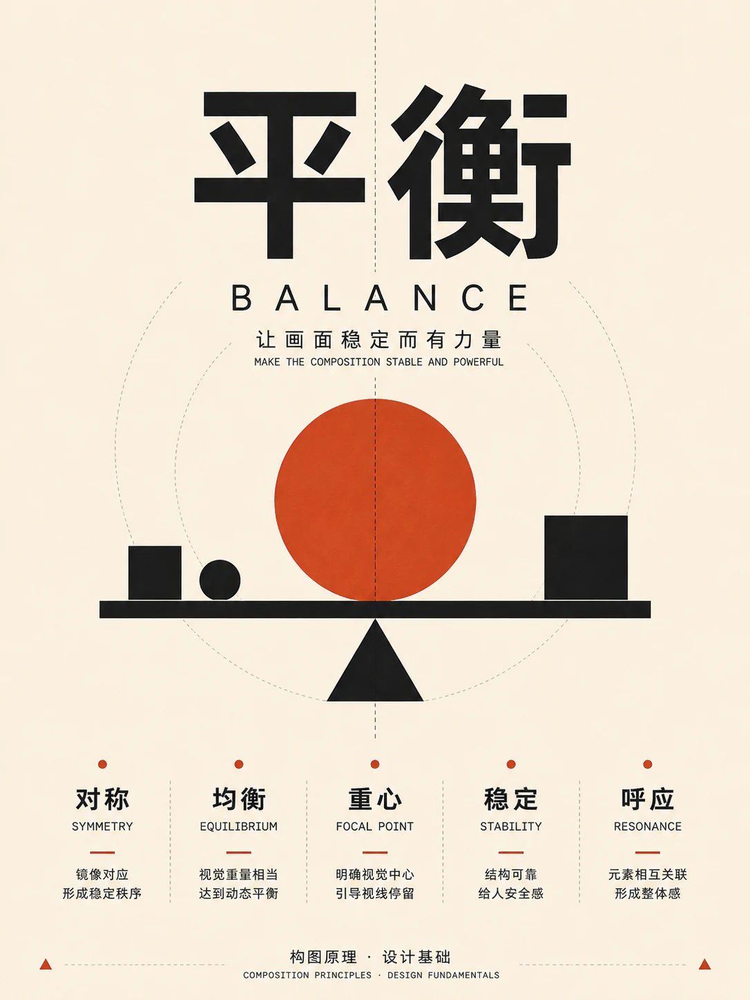

NO. 097
层级、比例与对比
平 衡
B A L A N C E
让画面稳定而有力量
MAKE THE COMPOSITION STABLE AND POWERFUL
0/5 · 右倾失衡
1:1 承袭 097 原海报：朱砂大圆定锚，左方圆双件对右大方块。
「平衡」让画面稳定而有力量——拖动上方天平里的块面与三角支点，亲手感受视觉力矩如何左右观感。
平衡不是左右一样
Symmetry vs. Dynamic Equilibrium
一提「平衡」，许多人下意识就想到中轴左右一模一样的折纸镜像。原海报的聪明之处在于把前两条要点分开立项：第一条叫「对称：镜像对应，形成稳定秩序」，第二条叫「均衡：视觉重量相当，达到动态平衡」——并且海报自己画的，正是第二种。
细看原海报天平：横梁左边放着一小方、一小圆两件轻物，推得离支点更远；右边只放一件大黑方块，靠支点更近；正中坐着朱砂大圆收束全盘。左右形状截然不同，却凭着「轻 × 长力臂 = 重 × 短力臂」在眼睛里严丝合缝扯平。
对称最省心也最庄重，适合需要秩序与权威的场合；非对称均衡则留出大小、疏密与路径差异，让视线在两翼之间往返呼吸。若想进一步安排谁压倒谁、块面该占几分之几，可配合阅读同小类的 096 主次关系原则 与 098 比例原则。
三类平衡速查
- 轴对称：左右镜像等重，庄重权威、节奏偏静。
- 非对称均衡：异形异量靠力臂扯平，稳重且有视线流动。
- 放射平衡：四面力矩同归圆心，聚焦感最强。
非对称动态均衡
ASYMMETRICAL EQUILIBRIUM
适用时机：
视觉重量从哪来
Anatomy of Visual Weight
右盘翘起 · 压不住（示意）
实心 vs 空心 · 外框与左块 100% 等大
纸面上的墨水没有物理克重，但大脑会自动给每一个图形贴上「轻重」标签。鲁道夫·阿恩海姆在 1954 年《艺术与视知觉》第一章里梳理了最关键的几条加权法则：面积大、色深反差强、高饱和暖色、轮廓紧实、孤零零落在留白中，以及离中心越远，都会让一个元素显得更沉。
因此，排版配平时千万不能只拿尺子量宽高。一幅浅灰风景照片占满半页，常常只需要对面一小块墨黑标题或一颗高饱和朱砂印章就能稳稳抵住；反过来，一个巨大的细线空心框因为透出纸底，实际压秤能力往往不如一颗实心小点。
想把这些单维对比用得更透，可以顺着同小类逐一展开：099 尺度对比、100 明暗对比、101 色彩对比、102 形状对比、103 质感对比，以及专讲孤立加权的 106 隔离原则。
五种常用配重杠杆
- 明度差：同面积下，墨黑实块远比浅灰压秤。
- 高饱和暖色：一抹朱砂红能抵住更大面积的中性灰。
- 孤立与远臂：外缘留白里的孤立小点自带杠杆放大。
重心略高于几何中点
Optical Center & Structural Skeleton
左右平衡之外，画幅还有一根看不见的上下平衡轴。原海报第三、四条写着「重心：明确视觉中心，引导视线停留」与「稳定：结构可靠，给人安全感」——但真动手把一个圆严丝合缝放在垂直 50% 几何正中时，多数人反而觉得它悄悄往下掉了一截。
这是因为人在重力世界里生活久了，默认看物体时会叠加一份「往下沉」的心理惯性。排版实践里常把主视觉或书封大字顺着中轴向上轻提约 3%–5%（经验值，落在距顶 45%–47% 处），称之为光学中心（Optical Center）。多留出一点底部空间，就像给主体垫上一块扎实底座。
同时，阿恩海姆在黑圆实验里指出：画框的中心、横竖中轴、两条对角线和四条边界共同织成一张「结构骨架」。当圆离几何中心差之毫厘，骨架的引力就会把它往边缘或轴心拉扯，人眼立刻感到焦躁不安。
距顶 50%
正落几何中点 50%
几何正中 50%：实际观感反而微微发沉
这套理论从哪来
Historical Lineage & Empirical Check
说多了一点 · 温和校准
不少设计教材把「平衡」讲成像杠杆公式一样非黑即白的硬法则，甚至给画框算出精确到小数点的质心得分。实际上，麦克马纳斯等学者在 2011 年《i-Perception》的实证研究中检验了大量艺术摄影与受试者裁切结果后发现：质心贴近轴线只是有用的起手直觉，画里人物的目光方向、故事主角的心理分量与创作意图，常常比纯几何像素分布更有话语权。把天平模型当练眼工具，不要拿它当死尺子。
什么时候别用平衡
When to Keep — and When to Break
原海报总述说「让画面稳定而有力量」，这句话放在大多数信息传达场景里都成立：当读者要安心阅读、快速建立信任、或者欣赏沉静的作品，平衡是头号底座。
但稳定并不适合所有情绪，有些场合反而应该别用平衡。如果海报讲的是百米冲刺的失重一跃、悬疑片里的危机降临、或是先锋演出的叛逆姿态，四平八稳反而会把情绪闷死。此时主动制造可控失衡——故意把重量压向一角、斜切中轴、留出大片令人不安的空洞——恰恰能把力量推向极致。
诀窍在于「有意识地破」与「不小心歪了」的区别：可控失衡往往倾得果断、反差鲜明，而且靠 095 视觉层级、104 动静对比 与 105 并置原则 把观众视线拽住；而无心失衡只是歪了一点点、让人忍不住想伸手把它扶正。
动手前问自己两句话
- 需要安心读完或建立信任？守住平衡，优先做非对称均衡。
- 需要瞬间速度、不安或反叛？果断破衡，斜度与留白一步给足。
挑出真正平衡的版面
Practice · One Variable Changed
题目：某建筑展 4:3 横幅海报，左半幅固定放一张偏暗的深墨建筑立面图。下面四版只改变右侧标题与展期区的视觉重量和落位——哪一版最能和左侧暗图形成稳重、有呼应的非对称平衡？
原海报与五条要点
Original Poster & Five Pillars

让画面稳定而有力量
MAKE THE COMPOSITION STABLE AND POWERFUL
海报五条原话要点
- 对称 SYMMETRY：镜像对应，形成稳定秩序。
- 均衡 EQUILIBRIUM：视觉重量相当，达到动态平衡。
- 重心 FOCAL POINT：明确视觉中心，引导视线停留。
- 稳定 STABILITY：结构可靠，给人安全感。
- 呼应 RESONANCE：元素相互关联，形成整体感。
原海报实采四色
暖宣纸
#FAF0DE纯墨黑
#1C1C1C朱砂红
#CE4A22虚线褐
#B8AB96